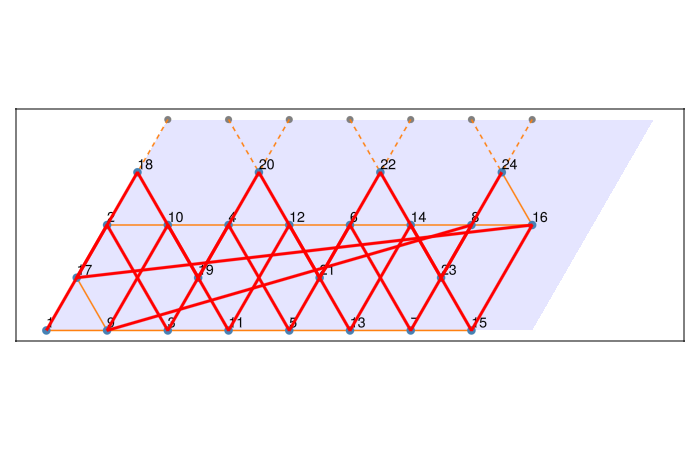
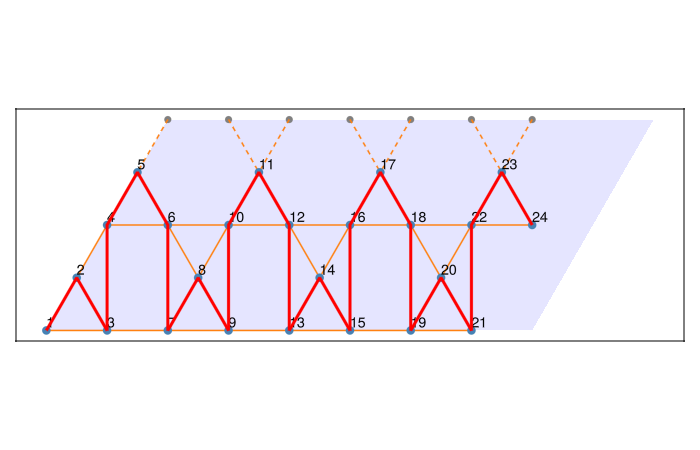
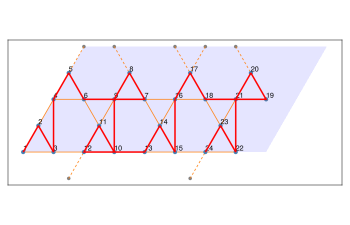

Site ordering for MPS
Matrix product state (MPS) methods such as DMRG require the sites of a two-dimensional cluster to be arranged along a one-dimensional path. The numbering of the sites in a FiniteLattice, and hence in the OpSum and the TOML file, is controlled by the atom_order keyword argument. This page shows how to snake an MPS through a kagome cylinder.
We consider a kagome cylinder with $L = 4$ unit cells along $\mathbf{a}_1$ (open boundary) and $W = 2$ unit cells along $\mathbf{a}_2$ (periodic boundary), i.e. 24 sites:
using Latlib
L, W = 4, 2
boundary = [L 0; 0 W]
periodicity = [false, true]To draw the path of the MPS, we define a small helper that plots the finite lattice and connects the sites in the order in which they are numbered.
using GLMakie: Figure, Axis, DataAspect, lines!, Point2f, hidedecorations!
function plot_path(fl)
f = Figure(size=(700, 450))
ax = Axis(f[1, 1], aspect=DataAspect())
Latlib.plot(fl; ax=ax) # sites, bonds, and site numbers
path = [Point2f(v.coords) for v in atoms(fl)]
lines!(ax, path; color=:red, linewidth=3)
hidedecorations!(ax)
return f
endDefault ordering
By default, atoms groups the copies of each atom of the unit cell together: first all copies of atom 1 in all unit cells, then all copies of atom 2, and so on. This is not a useful path for an MPS.
fl_default = FiniteLattice(kagome, boundary, periodicity)
plot_path(fl_default)
Ordering by unit cell
A custom ordering is a function order(a, b) that receives the Cartesian coordinates a and b of two sites as Vector{Float64} and returns true if a should come before b. The easiest way to write such a function is to compute a sort key for each site and compare the keys.
For an MPS on a cylinder we want to go column by column along the open direction $\mathbf{a}_1$ and, within each column, ring by ring around the periodic direction $\mathbf{a}_2$. To this end, we convert the Cartesian coordinates back to the lattice basis with to_lattice_basis and split them into the unit cell indices $(n_1, n_2)$ and the position of the atom inside the unit cell:
function cell_and_atom(x::Vector{Float64})
c = to_lattice_basis(kagome, EuclideanVector(x)).coords
c = round.(c; digits=8) # remove floating point noise
n = floor.(Int, c) # unit cell indices (n1, n2)
frac = c .- n # atom position inside the unit cell
return n, frac
end
cell_and_atom(atoms(fl_default)[5].coords)([2, 0], [0.0, 0.0])The sort key (n1, n2, frac...) compared lexicographically orders the sites column by column, and within each unit cell in a fixed order of the three kagome atoms:
function order_columns(a::Vector{Float64}, b::Vector{Float64})
key(x) = (n = cell_and_atom(x); (n[1][1], n[1][2], n[2]...))
return key(a) < key(b)
end
fl_columns = FiniteLattice(kagome, boundary, periodicity; atom_order=order_columns)
plot_path(fl_columns)
Snake ordering
The path above jumps back to the bottom of the cylinder after each column. A snake path avoids these jumps by reversing the direction around the cylinder in every other column. We achieve this by flipping the sign of $n_2$ and of the atom position in odd columns:
function order_snake(a::Vector{Float64}, b::Vector{Float64})
function key(x)
n, frac = cell_and_atom(x)
s = iseven(n[1]) ? 1 : -1 # reverse direction in odd columns
return (n[1], s * n[2], (s .* frac)...)
end
return key(a) < key(b)
end
fl_snake = FiniteLattice(kagome, boundary, periodicity; atom_order=order_snake)
plot_path(fl_snake)
The site indices of all interactions follow the chosen numbering, so the OpSum and the TOML file automatically refer to the MPS path:
H = neighbor_interaction("SdotS", "J", fl_snake)
H.ops[1:6]6-element Vector{Op}:
Op("SdotS", "J", [1, 2])
Op("SdotS", "J", [1, 3])
Op("SdotS", "J", [1, 5])
Op("SdotS", "J", [2, 3])
Op("SdotS", "J", [2, 4])
Op("SdotS", "J", [3, 8])toml = write_toml(fl_snake, H, "kagome-snake.toml"; zero_based=true, return_string=true)
println(join(split(toml, "\n")[9:16], "\n")) # first entries of the Coordinates sectionCoordinates = [
[0.0, 0.0],
[0.25, 0.4330127],
[0.5, 0.0],
[0.5, 0.8660254],
[0.75, 1.29903811],
[1.0, 0.8660254],
[2.0, 0.8660254],Other orderings
Any strict ordering of the sort keys can be used. For example, order_xy and order_yx sort by the Cartesian coordinates, and the ordering of the unit cells alone can be changed with the bravais_order keyword, which receives the lattice coordinates $(n_1, n_2)$ of two unit cells. Since the predefined kagome lattice has the slanted lattice vector $\mathbf{a}_2 = (1/2, \sqrt{3}/2)$, a rectangular cylinder can be obtained by defining a Lattice with a rectangular unit cell containing six atoms and using the same ordering functions with that lattice.